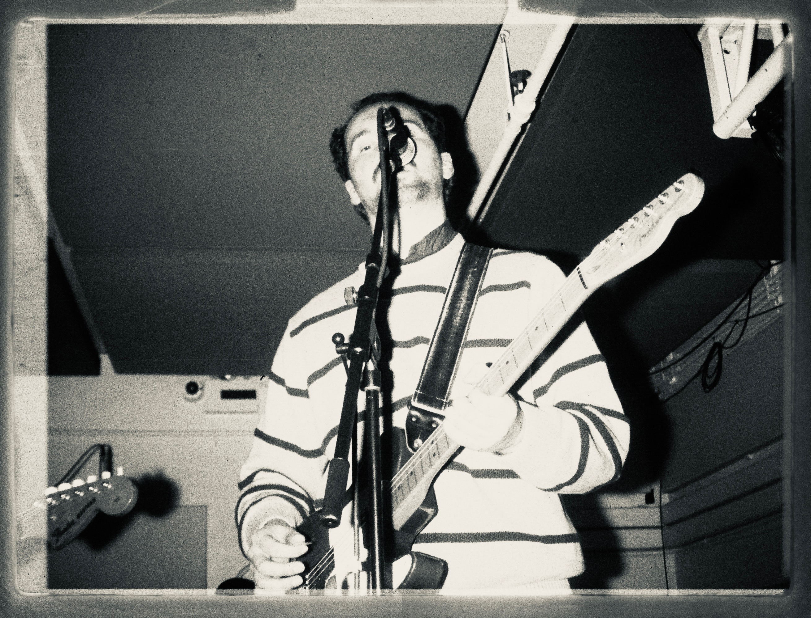
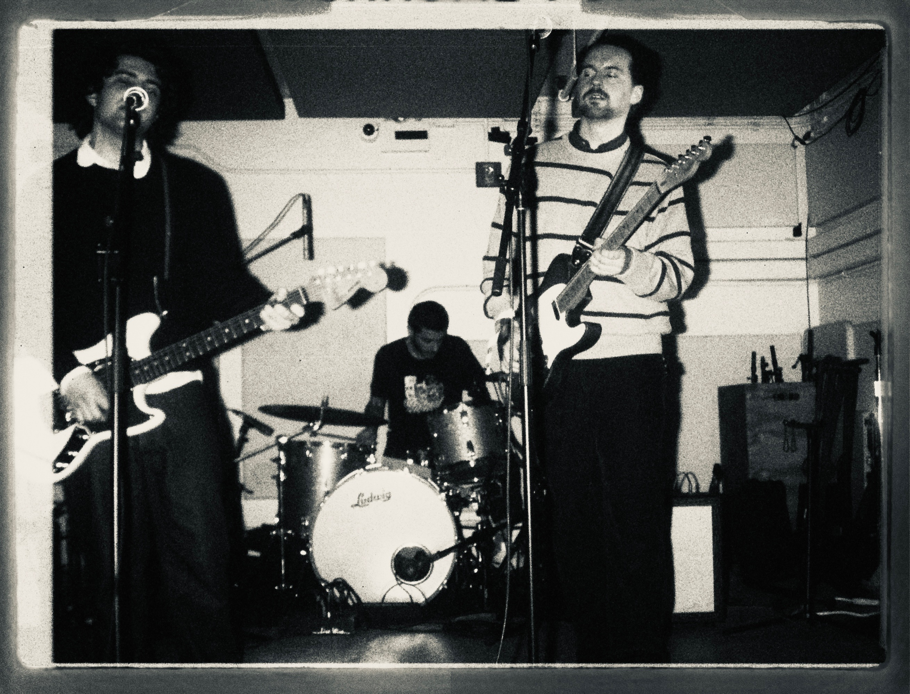
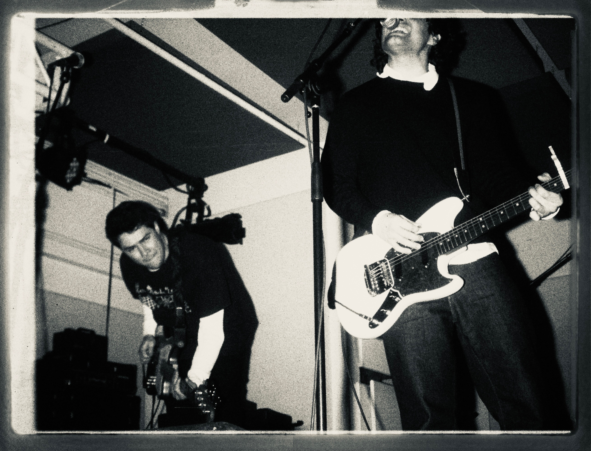

Local Weatherman is a Brooklyn-based, four-piece band. Their new EP, “Right One”, came out on January 16th via Karol Records, introducing a new set of considered and cathartic songs into the LW oeuvre.
Interview by Teddy Urban.

Photos by Elise Bergmann.
I’d love to hear about your start with music and with guitar. Growing up in Jersey, were you exposed to any local bands or scenes, or was music more of an independent interest for you?
My dad turned me on to a lot of music when I was really young. He was a big college radio listener around the time I was born, and he was into punk rock growing up so I was always aware of music beyond what was played on the radio. When I was in middle school I was so into blink-182 that, like, my teachers were aware of it. When I was 13 my math teacher told me to check out Saves the Day and The Get Up Kids. Saves the Day was this totally suburban New Jersey band, and getting turned onto that music opened me up to the emo revival thing that was happening around that time. In high school I was in bands that played some extremely DIY shows in basements or backyards or churches. I think the most legit venue I played was the Meatlocker in Montclair like two weeks before I graduated high school.
At what point did Local Weatherman take shape as it is today, as a four-piece with Ford, David, Sam?
Ford was living in Boston until the end of 2021 so he joined up around then, and then David and Sam joined at the beginning of 2023.
You’ve had a big focus on touring in the past couple years with, by my count, six tours since the start of 2024, including a ten-show run this past summer. Could you give a status report on what it looks like to be on the road these days? Any special moments that stick out to you?
I love playing out-of-town shows. We’ve had such an awesome response in places like Montreal and Burlington, and it’s so awesome to see some of the same faces each time we come out. The last two runs we rented a van which was awesome. The last time we went up to Montreal our friends Elise and Claire came with us and Elise brought us some healthy snacks for the road. Honestly, that changed everything. The previous run of shows we had done was through Pennsylvania and we had Primanti Bros. sandwiches two nights in a row because the first time we went we got a bunch of gift cards. Primanti Bros. sandwiches are basically: the driest bread you’ve ever had, smoked meat, french fries, and coleslaw that is somehow also completely dry. So bringing healthy snacks has been really good. Over the summer there were too many special moments to count. We played a show in Athens, Ohio where we crossed paths with our friends Panik Flower on tour and we played at what was basically a biker bar and stayed there until like 3 AM. When we played in Wilmington we got to play in the back of this hair salon and a bunch of people (including the cops) showed up. That was probably our favorite show of that run.

Any cities you haven’t played yet that you’re looking forward to hitting on tours in the future?
I would really love to get down to Baltimore and DC, and maybe if the cards align one day we could play on the west coast–that would be awesome.
A few months ago you announced the launch of Karol Records, putting out t-minus’s “Convenience in Understanding” in July and your own EP with Local Weatherman this January. What led you to starting a label? Have you had any similar ventures in the past?
I was thinking about starting a record label to put out our EP, and James Lynch from t-minus hit me up to ask if I knew of any labels who might want to put out their album. It was sort of the right place and the right time, and the t-minus album was so awesome that I basically offered to start the label to put it out.
The new EP, “Right One”, feels like a long time coming. I’ve had the hook to the titular song stuck in my head since the first time I heard it live, which feels like ages ago. How has it been putting this project together, and did the approach differ greatly from your past releases?
Thank you for saying that! This was the first recording that the four of us really worked on together as a band, so it was great to have everyone in the studio putting their ideas into it. We went back to Philly to record with Ian [Farmer] and Zack [Robbins] which was really fun, they both have such great ears and are always down to try any ideas we have. Our friend Sean MacKillop mixed all of the songs besides “The Hole,” and it was great to work with him. He’s a total pro and he was completely down to let me be over his shoulder while he mixed everything. And I have to give him a lot of credit for that, as I’m sure I was frustrating to deal with at points.

Last Christmas you guys played a holiday-themed show at Rubulad where you changed the lyrics to your songs to reflect the spirit of the season. Thinking about “The Hole” becoming “The Coal” still makes me laugh. After hosting another holiday show this past December, would you say this is turning into a tradition of sorts?
My plan is to keep hosting that party until the end of time. Unfortunately, we did not change any lyrics this time. Our label told us we weren’t allowed to.
You are often playing guitar and bass in other bands around town. How have those experiences influenced your work or performances with Local Weatherman? Has there been any one gig out of these that sticks out to you as being particularly memorable or impactful?
Playing shows with other bands is always a really nice reset. It’s nice to take a backseat and just be able to play guitar or bass and not have to worry about anything else. It’s been really fun playing with Sub*T, who were my favorite band in New York before we became friends. We went on a joint run up to Montreal last year and getting to play with them in another country felt totally crazy.
I’ve really enjoyed the transformation of your personal Instagram account. From what I can recall, it’s gone from the original @fritz00000 to @teenagewasteland1998, @bobdylansfactsnyc, and now @orchidfactsnyc. I don’t want to spoil any future plans, but where might this evolution be headed next?
So I have since reverted back to @bobdylanfactsnyc. I saw that Bob Dylan movie with Timothée Chalamet that came out last year and when I saw it something really, really resonated with me for some reason. I have no idea what the future will hold at this point.

On the topic of Orchid, I know you’re a true head for emo, screamo, and pop-punk. Any underrated bands of past or present that you want to put people onto?
I’m so happy that emo music has been having a moment lately. In New York, I love Holidays in United States. In terms of older stuff that people might not be turned onto, there was this band Morning Effort from the Chicago Suburbs who put out an EP in 2014 that I listened to probably hundreds of times when I was a lifeguard in high school and no one was in the pool.
Lastly, what’s next for Local Weatherman, and for you? Any band goals for 2026? Any projects outside of LW that you’re looking to work on?
I’m looking forward to writing some new music! Some of these songs have been in the making for 3 years and I’m excited to have a clean slate to work on some new ones with the band. I would also love to play another longer run of shows if we can hack it and I’d love to put out some more music on the record label!
Local Weatherman's new EP “Right One” can be found here on Bandcamp.